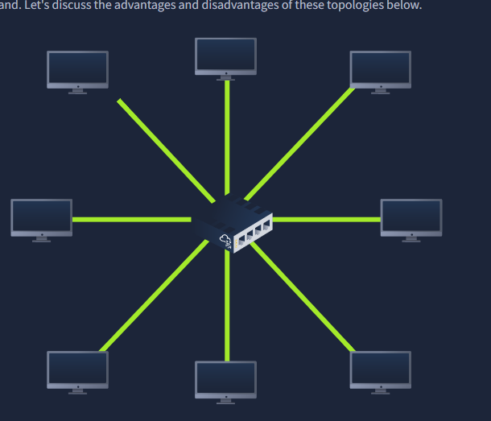
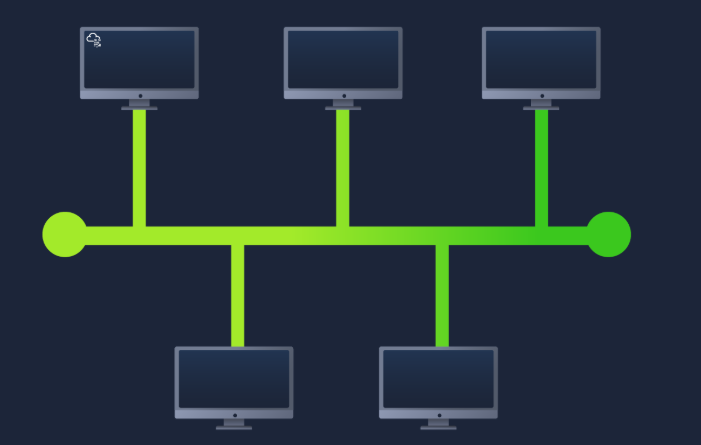
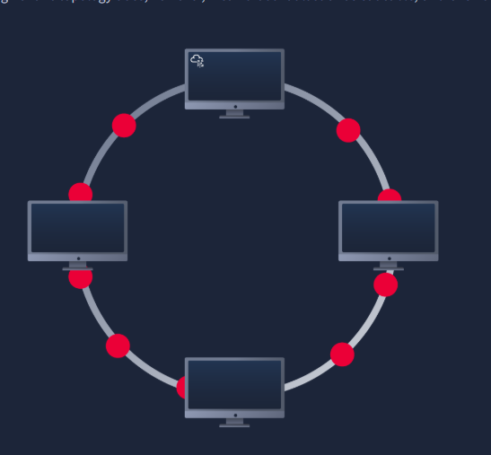
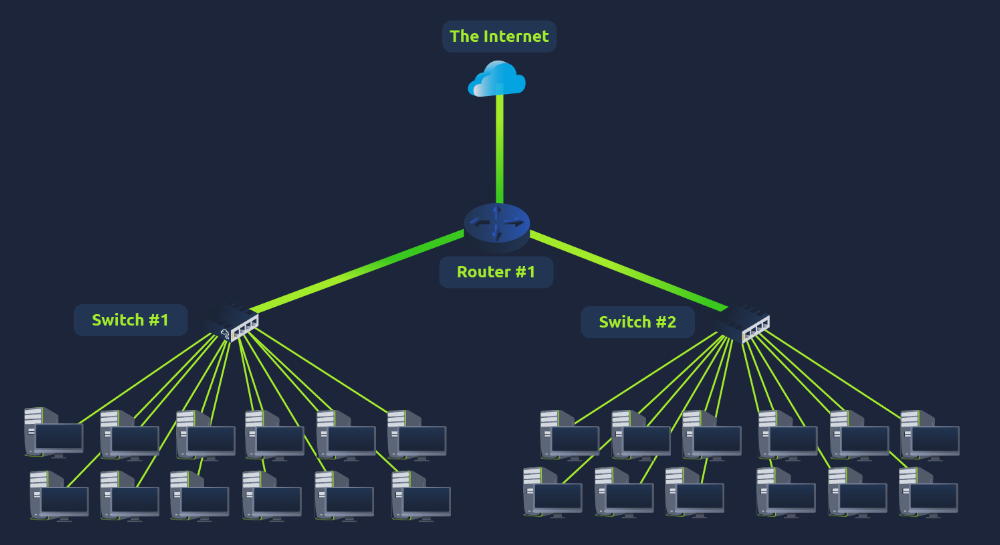
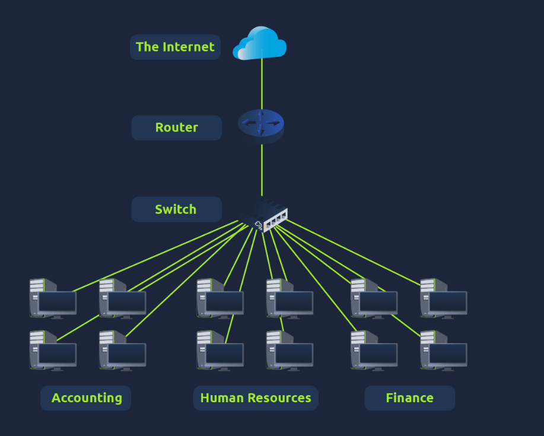
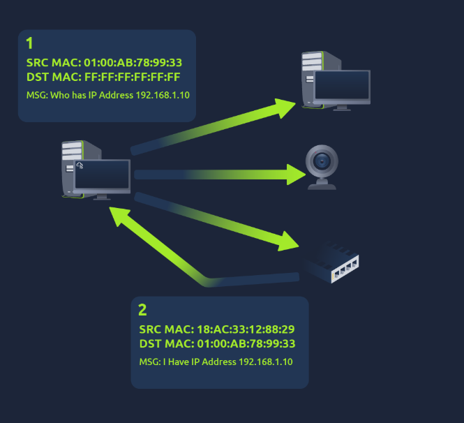
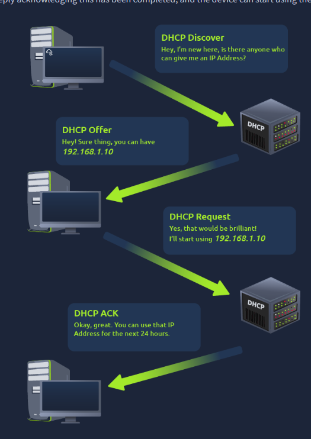

Learn about the technologies and designs that power private networks — topologies, switches, routers, subnetting, ARP, and DHCP.
Task 1 — Introducing LAN Topologies
Over the years various network designs — called topologies — have been experimented with and implemented. The three main types are Star, Bus, and Ring.
Star topology: Devices are individually connected via a central network device such as a switch or hub. The most common topology today due to its reliability and scalability, despite higher cost. Any information sent to a device travels via the central device first. Disadvantages: expensive (more cabling and dedicated hardware), harder to maintain at scale, and still has a single point of failure if the central device goes down.
Bus topology: Relies on a single connection known as a backbone cable — devices stem from it like leaves on a tree branch. Advantages: easier and cheaper to implement. Disadvantages: prone to bottlenecks since all data travels the same cable, little redundancy, and a single point of failure along the cable.
Ring (token) topology: Devices are connected in a loop. Data travels in one direction around the ring — each device forwards data until it reaches its destination. A device only forwards received data if it has nothing of its own to send first. Advantages: little cabling required, less dependence on dedicated hardware, easy to troubleshoot the direction of a fault. Disadvantages: inefficient since data may pass many devices, and a cut cable breaks the entire network.
Switch: A dedicated device that aggregates multiple devices (computers, printers, etc.) using ethernet cables. Available in 4, 8, 16, 24, 32, and 64 port variants — commonly found in larger networks such as businesses and schools. Much more efficient than hubs or repeaters because switches keep track of which device is connected to each port and send packets directly, rather than broadcasting to everyone. Switches and routers can connect to one another to increase network redundancy — if one path goes down, another can be used.
Router: Connects networks and passes data between them via routing — the process of creating a path between networks so data can be successfully delivered. Particularly useful when devices are connected by many paths.

Star topology — devices individually connected via a central switch or hub

Ring (token) topology — data travels in one direction around the loop

Router connecting multiple networks and choosing optimal paths for data delivery
Answer the questions below
What does LAN stand for?
Local Area Network
What is the verb given to the job that routers do?
Routing
Task 2 — A Primer on Subnetting
Subnetting is the process of splitting a network into smaller, more manageable sub-networks. Think of it as deciding who gets which slice of a cake — and reserving those slices accordingly.
A practical example: a business with separate Accounting, Finance, and HR departments. You may know where to direct information, but the network needs to know too — network admins use subnetting to categorise and assign specific parts of the network to reflect this structure.
Subnetting is achieved by splitting the number of hosts that can fit in a network, represented by a subnet mask. Both an IP address and a subnet mask are made up of four octets ranging from 0–255, giving a total of 32 bits.
Subnets use IP addresses in three ways: Network address (identifies the start of the actual network — e.g. 192.168.1.0), Host address (identifies a specific device on the subnet — e.g. 192.168.1.100), and Default gateway (assigned to the device capable of sending data to another network — usually .1 or .254).
Small networks typically use one subnet since they're unlikely to need more than 254 connected devices. Larger businesses may have far more, which is why subnetting is essential. Benefits: efficiency, security, and full control over network segments.

Subnetting — splitting a network into smaller, manageable segments

Business subnetting — departments on separate subnets for security and organisation
Answer the questions below
What is the technical term for dividing a network up into smaller pieces?
Subnetting
How many bits are in a subnet mask?
32
What is the range of a section (octet) of a subnet mask?
0–255
What address is used to identify the start of a network?
Network Address
What address is used to identify devices within a network?
Host Address
What is the name used to identify the device responsible for sending data to another network?
Default Gateway
Task 3 — ARP (Address Resolution Protocol)
Devices on a network have two identifiers: an IP address and a MAC address. ARP is the technology responsible for allowing devices to associate these two identifiers — mapping a MAC address to an IP address.
Each device on the network maintains a cache (a local ledger) storing the MAC-to-IP mappings of other devices it has communicated with.
When a device wants to communicate with another, it uses ARP to find the recipient's MAC address. It does this by sending two types of messages: an ARP Request (broadcast to the entire network — "which device owns this IP address?") and an ARP Reply (the device with the matching IP responds with its MAC address, which is then stored in the requester's ARP cache for future use).

ARP request broadcast and reply — mapping MAC address to IP address
Answer the questions below
What does ARP stand for?
Address Resolution Protocol
What category of ARP packet asks a device whether or not it has a specific IP address?
Request
What address is used as a physical identifier for a device on a network?
MAC Address
What address is used as a logical identifier for a device on a network?
IP Address
Task 4 — DHCP
IP addresses can be assigned manually (by entering them directly on a device) or automatically using DHCP (Dynamic Host Configuration Protocol).
When a device connects to a network without a manual address, it goes through a four-step process to obtain one automatically: DHCP Discover (device broadcasts a request to find any DHCP server on the network), DHCP Offer (the DHCP server replies with an available IP address), DHCP Request (the device sends a reply confirming it wants to use the offered address), and DHCP Ack (the server sends a final confirmation — assignment is complete and the device can start using the IP address).

DHCP four-step process — Discover, Offer, Request, Ack
Answer the questions below
What type of DHCP packet is used by a device to retrieve an IP address?
DHCP Discover
What type of DHCP packet does a device send once it has been offered an IP address?
DHCP Request
Finally, what is the last DHCP packet sent to a device from a DHCP server?